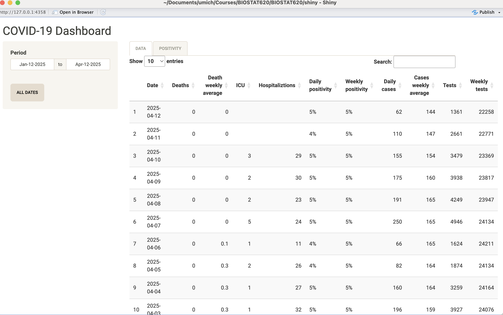
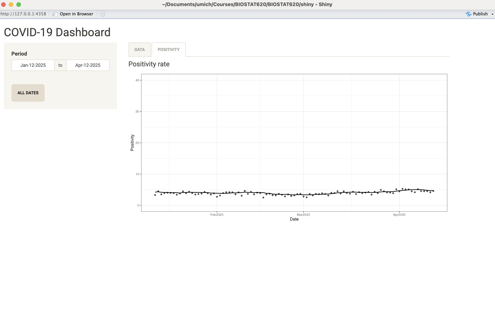
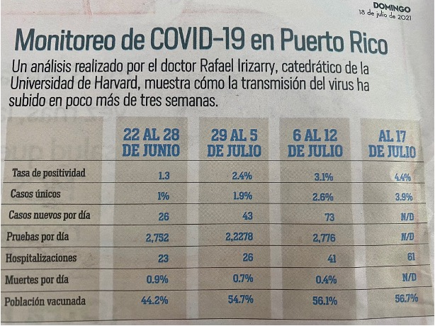

[1] 3Building a Website with Quarto and GitHub
BIOSTAT 620 - Week 11
Abigail Horn, Kelly Street, Dylan Cable
Interactive visualization: Last week
Interactive plots (
plotly,ggplotly)Interactive maps (
ggplotly,Leaflet)Interactive tables (
DT)
Interactive visualization: This week
We will build static websites using Quarto and GitHub Pages (like this.
We will learn how to render text, code, static visuals, and interactive visuals on the website.
We will then learn how to get your website to go “live” on GitHub Pages, making it available for anyone to see.
Building websites in Quarto with GitHub Pages
To understand how websites are built in Quarto, we first must understand a bit about how Quarto documents are rendered to produce HTML output.
It is not essential to understand all the inner workings of this process to be able to create a website. However, it is important to understand which component is responsible for what since this will make it easier to target appropriate help files when you need them!
The header
Start a new empty document.
At the top you see:
The things between the
---is the YAML header.You will see it used throughout the Quarto guide.
Text formating
*italics* or _italics_ = italics
**bold** = bold
***bold italics*** = bold italics
~~strikethrough~~ = strikethrough
`code` = code
Text formating
This:
```
line 1
line 2
```shows code chunks:
line 1
line 2Headings
You can start sections and subsections like this:
# Header 1
## Header 2
### Header 3
Links
Show the link and add link:
<https://quarto.org/docs/guide/>Add link to text:
[Quarto Guide](https://quarto.org/docs/guide/)
Looks like this:
Images

Shows the plot and caption:

My caption
The image can also be a local file.
Lists
Bullets:
- bullet 1
- sub-bullet 1
- sub-bullet 2
- bullet 2Looks like this:
- bullet 1
- sub-bullet 1
- sub-bullet 2
- bullet 2
Lists
Ordered list:
1. Item 1
2. Item 2Looks like this:
- Item 1
- Item 2
Equations

Note
If you are going to write technical report, you definitely want to learn LaTeX.
Once you learn LaTeX you will never want to use an equation editor again.
There are many online tutorials, like this one.
ChatGPT is great at LaTeX
Equations
Examples:
Inline:
$Y_i = \beta_0 + \beta_1 x_i + \varepsilon_i$looks like this \(Y_i = \beta_0 + \beta_1 x_i + \varepsilon_i\)Display math:
$$
\mathbf{Y} = \mathbf{X\beta} + \mathbf{\varepsilon}
$$looks like this:
\[ \mathbf{Y} = \mathbf{X\beta} + \mathbf{\varepsilon} \]
Computations
The main reason we use Quarto is because we can include code and execute the code when compiling the document.
In R we refer to them as R chunks.
This applies to plots as well; the plot will be placed in that position.
Note
To add your own R chunks, you can type the characters above quickly with the key binding command-option-I on the Mac and Ctrl-Alt-I on Windows.
Computations
We can write something like this:
Computations
It look slike this:
Note that it was evaluated and the result is shown.
Computations
By default, the code and result will show up as well.
You can send arguments to control the behavior with
|#For example, to avoid showing code in the final document, you can use the argument
echo: FALSE.
Computations
There are many options (auto-complete shows them).
For example, to avoid the the code running you can use
eval: FALSE.To avoid showing warnings
warning: FALSE, to avoid showing messagesmessage: FALSE.
Computations
- We recommend getting into the habit of labeling code chunks:
Helps with debugging
Gives meaningful names to generated images.
More on markdown
There is a lot more you can do with R markdown. We highly recommend you continue learning as you gain more experience writing reports in R. There are many free resources on the internet including:
- RStudio’s tutorial: https://quarto.org/docs/get-started/hello/rstudio.html
- The knitR book: https://yihui.name/knitr/
- Pandoc’s Markdown in-depth documentation
- Guide for academic reports
quarto render
RStudio provides the Render button that makes it easier to compile the document.
You can also type
quarto render filename.qmdon the command line. This offers many options.You can produce html, pdf, or word documents.
You can specify the default in the YAML header using:
format: html,format: pdf,format: docx, orformat: gfm(gfm stands for GitHub flavored markdown, a convenient way to share your reports).
quarto preview
- Another useful command is
quarto preview, which allows your quarto project to update (as a preview) in real time as you make changes.
Quarto Render
What does Quarto require to render files?
Quarto combines several different processes together to create documents. In doing so it requires the use of a few essential ingredients (software and packages)1:
Quarto: A markup language for creating
.qmdfiles that you have used.quarto: An R package for processing and converting
.qmdfiles into a number of different formats.knitr: An R package for transforming a mixture of R code and text in a
.qmdfile into a.mdfile by executing the code and “knitting” the results back into the document.Pandoc: A document converter. It is designed to convert plain text files from one markup language (including
.qmdfiles) into many output formats. It is a command line software with no GUI. Although it’s separate from R, it comes bundled with R Studio.
Quarto Render
The basic workflow structure for a Quarto document is shown below, including intermediate files that are created before the final output.

Credit: Gabriel Odom
Quarto Render
The workflow in more detail is as follows:
The
.qmddocument is written. It is the original format of the document. It contains a combination of YAML (metadata in the header), text, and code chunks. The YAML header specifies document properties and rendering instructions (likehtmlfor HTML output)The
knit()function in knitr is used to execute all code embedded within the.qmdfile, and prepare the code output to be displayed within the output document. knitr handles the execution and translation of all code in the file. All these results are converted into the correct markup language and contained within a temporary.mdfile.The
.mdfile is processed by Pandoc. It takes any parameters specified within the YAML frontmatter of the document (e.g.,title,author, anddate) to convert the document to the output format specified in theoutputparameter (in our case:htmlfor HTML output)
Quarto Render (cont.)
- The whole process is implemented by Quarto (the software) via the function from the built-in quarto (package):
quarto::quarto_render()
Along the way, we add structure and style. A wide range of tools helps us in this process. For creating HTML output, some of these include Cascading Style Sheets (CSS) for adding style (e.g., fonts, colors, spacing) to Web documents, raw HTML code, and Pandoc templates.
YAML metadata
YAML = Yet Another Markup Language YAML Ain’t Markup Language
It is a data-oriented language structure used as the input format for diverse software application. It is not a markup language (which includes indicators or “markup” which direct processing) but a serialization language. Serialization is the process of converting an object into a format that can be transmitted or stored, by converting the object series of bits. This series of bits is then read later to reconstruct the object.
YAML metadata
A typical YAML header looks like this, and contains basic metadata about the document and rendering instructions:
YAML metadata (cont.)
The YAML metadata affects the code, content, and the output. It is processed during many stages of the rendering process by quarto, knitr, and Pandoc:
The
titleandauthorfields are processed by Pandoc to set the values of template variablesThe
formatfield is used by quarto and Pandoc to select the rendering process.
Building a website is slightly more complex than rendering a single HTML document. We will come back to specify the YAML metadata necessary for setting up a website.
Summary: What happens when we render Quarto files?
In short: quarto::quarto_render() = knitr::knit() + Pandoc
The YAML metadata in the Quarto (.qmd) file dictates the process and how the output is produced.
Website basics
The most common components of a web page are HTML, CSS, and JavaScript. HTML is relatively simple to learn, but CSS and JavaScript can be much more complicated, depending on how much you want to learn and what you want to do with them.
You don’t need to know much (or any) HTML, CSS, or JavaScript to develop a website using Quarto. But these tools may become necessary if you want to tweak the appearance or performance of your website.
HTML basics
HTML = Hyper Text Markup Language. HTML is a standard markup language (not programming language) that provides the primary structure of most websites.
HTML defines the basic structure of a web page. HTML works on the look of the website without the interactive effects and all. HTML pages are static, which means the content cannot be changed.
All elements in HTML are represented by tags. Most HTML tags appear in pairs, with an opening tag and a closing tag, and content is placed between the opening and closing tags, e.g.,
<span style="background-color: #B9BFFF">This is highlighted text</span>–> This is highlighted text.There are a few exceptions, such as the
<img>tag, which can be closed by a slash / in the opening tag, e.g.,<img src="foo.png" />. You can specify attributes of an element in the opening tag using the syntax name=value (a few attributes do not require value).Basically an HTML document consists a
headsection andbodysection. You can specify the metadata and include assets like CSS files in the head section.
Helpful HTML
Font size and color: <font size="3" color="red">Text here!</font>
Columns: <div class="col2"> and </div>
Centered text: <center>**Here the text is centered. Here are good resources:**</center>
Small image right-aligned: <div align="right"><img src="images/Rmd_cheatsheet.png" width="150px"></div>
Large image centered: <center><img src="images/Rmd_cheatsheet.png" width="500px"></center>
CSS basics
CSS = Cascading Stylesheets (CSS). It is a markup language is used to describe the look and formatting of documents written in HTML. it is responsible for the visual style of your site, responsible for components including:
- color palettes, images,
- layouts/margins, fonts
as well as interactive components like
- dropdown menus
- buttons and forms
There are 3 ways to define styles:
- in-line with HTML
- placing a style section in your HTML document
- define the CSS in an external file that is referenced as an HTML link (most flexible)
JavaScript
JavaScript is an advanced programming language (unlike HTML and CSS, which do not contain any programming logic) that makes web pages more interactive and dynamic. JavaScript simply adds dynamic content to websites to make them look good. JavaScript can be embedded inside HTML.
An effective way to learn it is through the JavaScript console in the Developer Tools of your web browser because you can interactively type code in the console and execute it, which feels similar to executing R code in the R console (e.g., in RStudio). You may open any web page in your web browser, then open the JavaScript console, and try the code below on any web page:
document.body.style.background = 'orange';Which should turn the background orange, unless the page has already defined background colors for certain elements.
To effectively use JavaScript, you have to learn both the basic syntax of JavaScript and how to select elements on a page before you can manipulate them.
Website basics: learning more
The best way to learn about what goes into web development: use “Developer Tools”, e.g.
View -> Developerin Google Chrome. Or right click and “inspect”.A brief intro to HTML, CSS, and JavaScript is provided in the blogdown book
You can also learn more at w3schools or of course StackOverflow!
Building a website using Quarto
Background: Static vs. dynamic websites
A dynamic site relies on a server-side language to do certain computing and sends potentially different content depending on different conditions. A common language is PHP, and a typical example of a dynamic site is a web forum. For example, each user has a profile page, but typically this does not mean the server has stored a different HTML profile page for every single user. Instead, the server will fetch the user data from a database, and render the profile page dynamically.
A static site consists of static files such as HTML, CSS, JavaScript, images, etc., and the web server sends exactly the same content to the web browser no matter who visits the web pages. There is no dynamic computing on the server when a page is requested. It is just one folder of static files.
Creating a Quarto website
Quarto has a built-in static site generator, which we will be using today. It comes with a library of CSS styles and themes (Bootstrap 5) to choose from.
- There are many other static site generators, including Hugo, Jekyll, and Hexo, etc. These provide many site themes, templates, and features, but are more complex than quarto’s built-in generator.
Creating a Quarto website (cont. 1)
quarto’s site generator is a good option if:
- You are familiar with generating single-page HTML output in Quarto
- You want to build a simple website with a few pages
- It suffices to use a flat directory of
.qmdfiles - You don’t require features such as forums or RSS feeds
Overview
There are two main steps for creating a personal website that will be hosted on GitHub:
- Create website locally
- Deploy website through GitHub
If you need a guide, we strongly recommend the official Quarto documentation on website building: https://quarto.org/docs/websites/
Overview: Local Setup
The easiest way to get started on a new website is to create a new project in R Studio:
- File > New Project…
- New Directory
- Quarto Website
- Give your project/directory a name and choose its location
- Create a git repository
- Create Project
Overview: Local Setup (cont. 1)
When you create the new project, you’re taken to a new R environment in the project directory. The directory contains these files:
_quarto.yml: Website settings and elements common to all pages..gitignore: Files to be ignored.about.qmd: An About page for our website.index.qmd: The main page of our website.style.css: Additional style options.<name>.Rproj: An R Studio project file.
Overview: Local Setup (cont. 2)
If we hit the Render button, Quarto will build our website and automatically open the main page in a web browser.
Notice that this created that additional output folder:
_site: The static version of your website, where HTML files (and others) are stored.
Website elements: _quarto.yml
Your _quarto.yml should look like this:
Website elements: _quarto.yml (cont. 1)
There’s one very important field we need to add, which is the output-dir. We’ve seen that our output directory is called _site, but unfortunately, GitHub Pages can only deploy from either (1) the root of your repository, or (2) a subdirectory called docs.
Add a new line under project: in your _quarto.yml file like this:
Once you’ve done this, you can delete the _site directory.
_quarto.yml: Navigation Bar
The navbar element of _quarto.yml can be used to define a common navigation bar for your website. You can include internal and external links on the navigation bar as well as drop-down menus for sites with a large number of pages.
Some things you can do with navigation bars:
- Use the
typefield to choose between thedarkandlightstyles (every theme includes distinct colors both). - Align items either to the
leftor to theright. - Include both internal and external links.
- Use icons from Bootstrap.
_quarto.yml: Footer
There are many other elements you may want to include on every page. For example, the BIOSTAT 620 website contains a footer:
Rendering a page
As you work on the individual pages of your website, you can render them using the Render button just as you do with conventional standalone Quarto documents.
Rendering the site
Note that only the active page is rebuilt when you click “Render,” so once you are happy with the results of rendering you should make sure to rebuild the entire site with quarto_render() in R or quarto render in the terminal.
In other words, you need to re-build the website to integrate any new changes to one page.
Rendering the site (cont.)
You can call the quarto_render() function to render every page of the site.
If you do this from within the directory containing the website, the following will occur:
- All of the
*.qmdand*.mdfiles in the root website directory will be rendered into HTML. - The generated HTML files and any supporting files (e.g., CSS and JavaScript) are copied into an output directory (
docsfor us, but_siteby default). - The HTML files within the
docsdirectory are now ready to deploy as a standalone static website.
Helpful features
Website themes
Quarto makes styling easy for you through the Bootstrap framework. Bootstrap has multiple themes we can choose from. Explore themes here
We can change the website’s theme in _quarto.yml or even set one theme for “dark mode” and another for “light mode.”
R scripts
If you have R code that you would like to share across multiple Quarto documents within your site, you can create an R script (e.g., utils.R) and source it within your .qmd files. For example:
Adding interactive content
Quarto includes many facilities for generation of HTML content from R objects, including:
- Conversion of standard R output types (e.g., ggplot2 objects) within code chunks done automatically by knitr
- A variety of ways to generate HTML tables, including the
knitr::kable()function and other packages such as kableExtra - A large number of available HTML widgets (e.g., plotly and DT objects) that provide rich JavaScript data visualizations.
As a result, for most Quarto websites you will not need to worry about generating HTML output at all (since it is created automatically).
* Saving interactive plots as HTML widgets
If you are having issues with embedding interactive plots, you can use the package widgetframe to save HTML files via an HTML iframe. This is convenient not only for re-using a widget in various parent documents, but also for preventing any JavaScript and CSS in the parent document from negatively impacting how the widget renders
The widgetframe package automates the saving of widgetframe packages into .Rmd documents which will eventually be knitted to an HTML or a derived format. Use the default options and embed files like this:
```{r}
library(widgetframe)
test.widget <- plot_ly()
widgetframe::frameWidget(test.widget, width = '75%')
```widgetframe will take care of embedding the supporting HTML widget libraries in a folder together.
* Adding dynamic content
Quarto is compatible with a variety of external libraries that provide commenting systems. You can check the documentation for how to incorporate a comments section on your website: https://quarto.org/docs/output-formats/html-basics.html
knitr caching
If your website is time consuming to render, you may want to enable knitr’s caching during the development of the site, so that you can more rapidly preview. To enable caching for an individual chunk, just add the cache = TRUE chunk option:
To enable caching for an entire document, add cache = TRUE to the global chunk option defaults:
Note that when caching is enabled for a .qmd document, its *_files directory will be copied rather than moved to the _site directory (since the cache requires references to generated figures in the *_files directory).
How to help people find your site
Helping people find your site, i.e. Search Engine Optimization, is the art of making a website easy for search engines like Google to understand. There are multiple books and moreover companies devoted to improving SEO. A few key points:
- The title that you select for each page and post is a very important signal to Google and other search engines telling them what that page is about.
- Description tags are also critical to explain what a page is about. In HTML documents, description tags are one way to provide metadata about the page. You can add a description to a page’s YAML header like:
description: "A brief description of this page that helps SEO find it!.";- URL structure matters.
A good place to learn more is the Google Search Engine Optimization Starter Guide
Deploying your website
Deployment
At this point, your static website is basically a folder containing static files.
- All site content is copied into the
docsdirectory, so deployment is simply a matter of moving that directory to the appropriate directory of a web server, and your website will be up and running shortly.
The key question is which web server you want to use.
- We will focus on hosting websites through GitHub pages, because it’s a free, easy option and we already have some familiarity with GitHub.
There are other free sites for website hosting, and another popular and free choice is Netlify.
Deploying with GitHub Pages
The workflow for deploying to GitHub Pages is as follows:
- Make a GitHub repository with a
docssubdirectory (you can use GitHub Desktop to establish a link between your local repository and a new remote repository) - Go to “Settings”
- Click “Pages” in the left column
- Under “Source,” select “Deploy from a branch”
- Under “Branch” select the
mainbranch and specify the/docsfolder
Deploying with GitHub Pages (cont.)
Once you’ve done this, it should automatically set up a new workflow in the Actions tab of your repository. This workflow creates the public version of your website, typically at <username>.github.io/<project>/.
Now, every time you push a new update to your website, GitHub Pages will automatically update it!
Shiny Motivation

Shiny Motivation

Shiny Motivation

What is Shiny?
Shiny is an R package for building interactive web applications.
Combines the computational power of R with the interactivity of modern web technologies.
No web development experience required!
Why Use Shiny?
Create interactive dashboards for data visualization.
Share R analyses with non-programmers.
Integrate real-time data updates in your workflows.
Basic Components
- UI: Defines the layout and appearance of the app.
- Server: Contains the logic and computations of the app.
- App: Combines the UI and server into a functional app.
Basic Components
library(shiny)
# Define UI
ui <- fluidPage(
titlePanel("Hello, Shiny!"),
sidebarLayout(
sidebarPanel(
sliderInput("num", "Choose a number:", 1, 100, 50)
),
mainPanel(
textOutput("result")
)
)
)
# Define Server
server <- function(input, output) {
output$result <- renderText({
paste("You selected:", input$num)
})
}
# Run the app
shinyApp(ui = ui, server = server)Example: Interactive Plot
App Overview
- A scatter plot with customizable inputs.
UI Code
Server Code
server <- function(input, output) {
output$scatterPlot <- renderPlot({
plot(
x = rnorm(input$points),
y = rnorm(input$points),
col = input$color,
pch = 19
)
})
}- Combine UI and server using
shinyApp(ui, server).
Advanced Features
Reactive Programming
- reactive(): Generates a reactive expression.
- observe(): Executes code in response to changes.
- observeEvent(): Triggers on specific input changes.
Deployment Options
- Share Shiny apps using:
- Shiny Server
- RStudio Connect
- shinyapps.io
Resources
Primary reference:
Useful tutorials:
- Video series (ft. Emil Hvitfeldt): Quarto Websites with Charlotte and Emil
- Step-by-step tutorial: Build a Quarto Website - Dan Yavorsky
- Personal academic website: Creating your personal website using Quarto
Interactive plots, shiny, and dashboards: